Предмет соглашения: Урегулирование территориального спора и установление протокола сосуществования между корпорацией Urbanshade и аномальной сущностью Z-5 («Фридлейв», «Ландветте») в пределах географической аномалии, именуемой Зона Лет-Ванд.
Стороны соглашения:
1. Корпорация Urbanshade, в лице полномочных представителей высшего руководства (имена засекречены, далее ⸺ «Корпорация»).
2. Сущность Z-5, самоидентифицирующая себя как «Фридлейв», действующая от своего имени и в статусе единоличного хранителя и распорядителя Зоны Лет-Ванд (далее ⸺ «Хранитель»).
Преамбула: Принимая во внимание события, описанные в Z5-001, и признавая нецелесообразность дальнейшей эскалации конфликта, стороны пришли к взаимному соглашению на следующих условиях. Настоящий договор аннулирует любые предыдущие претензии Хранителя к Корпорации по факту несанкционированного вторжения и гибели сотрудников в период с ██.██.19██ по 30.04.19██.
▎Статья 1: Территориальные уступки и права на застройку.
1.1. Хранитель отзывает свои возражения против строительства и дальнейшей эксплуатации глубоководного научно-исследовательского и промышленного комплекса «Хадальный Тайный Объект» (далее ⸺ Объект «Хадал»).
1.2. Корпорация Urbanshade признает верховное право Хранителя Z-5 на всю территорию Зоны Лет-Ванд, включая недра, водную толщу и сам Объект «Хадал».
1.3. Корпорация Urbanshade обязуется никогда, ни при каких обстоятельствах, не предпринимать попыток изгнания Хранителя с территории Зоны Лет-Ванд, равно как и не проводить ритуалов, церемоний, научных экспериментов или иных действий, прямо или косвенно направленных на ослабление связи Хранителя с вверенной ему территорией. Данный пункт имеет приоритет над любыми другими внутренними директивами и протоколами безопасности Корпорации.
1.4. Хранитель оставляет за собой право выражать недовольство архитектурным стилем или цветовым решением вновь возводимых построек. Корпорация обязуется рассматривать такие жалобы в приоритетном порядке и, по возможности, вносить коррективы в дизайн-проект, если это не противоречит техническим требованиям безопасности. В случае невозможности изменения дизайна, Корпорация обязуется компенсировать Хранителю ущерб в соответствии со Статьей 3 настоящего Соглашения.
▎Статья 2: Статус Хранителя и его взаимодействие с персоналом.
2.1. Хранителю присваивается официальный статус «Покровитель Хадального Подразделения».
2.2. Хранитель получает право свободного, неограниченного перемещения по всей территории Объекта «Хадал», включая зоны строгого режима и карантинные сектора, при условии соблюдения Статьи 4 настоящего соглашения.
2.3. Корпорация признает за Хранителем право создавать и курировать внутреннюю структуру, именуемую «Подразделение Хроник», цели и методы работы которого не подлежат аудиту со стороны службы безопасности Urbanshade, если их деятельность не влечет за собой прямого материального ущерба инфраструктуре Объекта или массовой гибели персонала.
2.4. Хранитель обязуется воздерживаться от намеренного причинения физического вреда сотрудникам Корпорации, находящимся при исполнении служебных обязанностей, за исключением случаев самозащиты или грубого нарушения сотрудниками неписаных правил вежливости, установленных Хранителем.
▎Статья 3: Порядок умилостивления и компенсации.
3.1. Корпорация признает необходимость регулярного умилостивления Хранителя для поддержания стабильной аномальной обстановки в Зоне Лет-Ванд.
3.2. В статью бюджета Объекта «Хадал» вводится отдельная строка расходов: «Фонд поддержания расположения Z-5 (Кондитерские изделия и сопутствующие услуги)». Сумма ежемесячных отчислений утверждается в ходе личных встреч Хранителя с финансовым отделом, но не может быть ниже ████ крон в эквиваленте.
3.3. Корпорация не препятствует и не регламентирует вступление сотрудников Объекта «Хадал» в личные, в том числе интимные или матримониальные, отношения с Хранителем Z-5. Любые соглашения такого рода считаются частным делом сотрудника и Хранителя и не подлежат рассмотрению в корпоративном суде Urbanshade.
3.4. В случае вступления Хранителя в официальный брак с сотрудником Корпорации, Urbanshade обязуется предоставить супругу (супруге) дополнительные дни к отпуску и единовременную выплату в размере █████ крон.
3.5. Хранитель имеет право вести «Реестр нанесенных обид и неудобств». За каждую запись в Реестре, признанную представителем Корпорации обоснованной (или не оспоренную в течение ██ часов), Корпорация обязуется предоставить Хранителю компенсацию в виде:
ㅤㅤ3.5.1. Личных извинений от начальника смены, зачитанных вслух в пустом помещении.
ㅤㅤ3.5.2. Права Хранителя на одну «безобидную шалость» в отношении персонала, не влекущую за собой необратимых физических увечий или массовой гибели.
3.6. Сотрудникам Объекта «Хадал» настоятельно рекомендуется оставлять небольшие подношения (сладости, выпечку, блестящие предметы) в специально отведенных местах, помеченных символом «Розовый Лебедь». Игнорирование данной рекомендации не наказуемо, однако может привести к повышенному вниманию со стороны Хранителя к данному конкретному сотруднику.
▎Статья 4: Ограничения и особые условия.
4.1. Хранитель обязуется воздерживаться от вмешательства в работу систем жизнеобеспечения Объекта «Хадал» с целью развлечения, за исключением предварительно согласованных случаев.
4.2. Хранитель сохраняет за собой право в любой момент разорвать настоящее Соглашение в одностороннем порядке. В случае наступления данного события, Корпорация обязуется немедленно приступить к процедуре полной эвакуации и консервации Объекта «Хадал».
4.3. Корпорация признает право Хранителя определять круг лиц, которых он считает «своими». Корпорация обязуется не использовать данных сотрудников в качестве «живого щита» или «разменной монеты» в переговорах с Хранителем, а также не подвергать их дискриминации на рабочем месте в связи с их особым статусом.
4.4. Корпорация обязуется уведомлять Хранителя о любых плановых сокращениях штата или массовых переводах персонала с Объекта «Хадал» не менее чем за ██ дней до события. Хранитель имеет право наложить вето на перевод или увольнение сотрудников, входящих в круг «своих» или представляющих для него ценность.
4.5. Подробности, содержание бесед, темы для разговоров и любые иные детали встречи, состоявшейся 30.04.19██ между представителями высшего руководства Корпорации и Хранителем, являются государственной тайной.
4.6. В официальной документации сущность именуется Z-5. В личном общении с сущностью персоналу Объекта «Хадал» предписывается использовать имя «Фридлейв» или обращение «Хранитель». Использование прозвищ «Птичка», «Рыбка», «Гусьрыба», «Утёнок» или «Пернатый» допускается только в случае, если сам Хранитель выразил на это явное согласие.
▎Статья 5: Заключительные положения.
5.1. Настоящий договор составлен в двух экземплярах на норвежском языке. Один экземпляр хранится в сейфе Директора Объекта «Хадал». Второй экземпляр, со слов Хранителя, помещен «в надежное место, где его никто и никогда не найдет».
5.2. Все изменения и дополнения к настоящему договору действительны только в том случае, если они засвидетельствованы личной подписью Хранителя. Факсимиле и цифровые подписи не принимаются.
5.3. Настоящий договор заключен на неопределенный срок и действует до момента его расторжения в соответствии со Статьей 4.2.